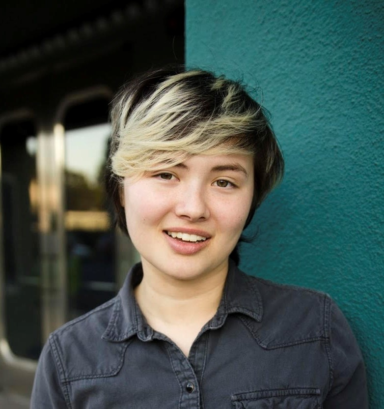

Welcome to my webpage!
Welcome to the webpage of Sugi Sugihara, a Communication Design student concetrating in visual (graphic) design at Cal State Monterey Bay.
About Me
I am originally from Seal Beach, California, but I moved to Monterey to pursue the unique opportunity to get an Assoiates of Science but in design. Besides design, I love illustration, cosplay, hiking, and sewing. I am also very passionate about marine biology; I used to be a student worker in the Dennis Kelly aquarium and an education volunteer at the Aquarium of the Pacific. Afrer CSUMB, I will return to Orange Coast College to complete my degree in aquarium science. I hope to use both of my degrees in tandem to get a job in the marine biology field.